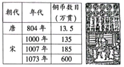

2022年北京市中考历史真题 · 选择题 第6、7、8、9、10题
6. 唐朝与70多个国家或地区有官方往来，允许各国人来留学、经商，吸收许多外国人担任官职。唐朝 文学艺术对日本、高丽等国影响深远，丝织技术传到西亚、欧洲。这反映出唐朝（ ）
文学艺术对日本、高丽等国影响深远，丝织技术传到西亚、欧洲。这反映出唐朝（ ）
A. 中外交往繁盛B. 政治制度完善C. 民族关系和睦D. 南北交流加强
7. 下侧是《唐宋发行铜币数目统计表》和《北宋纸币铜版拓片》。材料体现出宋代（ ）

A. 商业活动时间、空间不再受限B. 外贸所得在财政中占重要地位
C. 商业贸易繁荣的程度超过唐代D. 都市出现娱乐兼营商业的场所
8. 乾隆时，六世班禅拒绝了英国殖民者与西藏地方建立直接联系的要求，明确表示西藏的一切无不听命于朝廷。为纪念他的功绩，乾隆皇帝下令修建了清净化城塔（见下图，位于北京西黄寺内）。此塔的修建见证了（ ）
A. 统一多民族国家巩固B. 清朝经济的恢复发展
C. 清朝东北边疆的稳定D. 文化专制政策的推行
9. 中国古代科技成就对世界文明发展具有重要推动作用。下表①处应为（ ）
科技成就 | 传播及影响 |
造纸术 | 8世纪传播到阿拉伯地区，新型纸张取代了羊皮纸和纸草纸 |
① | 14世纪初传到欧洲，对其作战方式产生巨大影响，推动了社会变革 |
《本草纲目》 | 17世纪被翻译为拉丁文等文字，促进了欧洲植物学的发展 |
A. 《齐民要术》B. 火药C. 活字印刷术D. 《农政全书》
10. 甲午中日战争的失败使得许多有识之士认识到，当时中国面临的最迫切的任务不是“自强”“求富”，而是“救亡”。此后资产阶级进行了两条路径的“救亡”探索，代表性的事件是（ ）
A. 虎门销烟、金田起义B. 金田起义、洋务运动
C. 洋务运动、百日维新D. 百日维新、辛亥革命